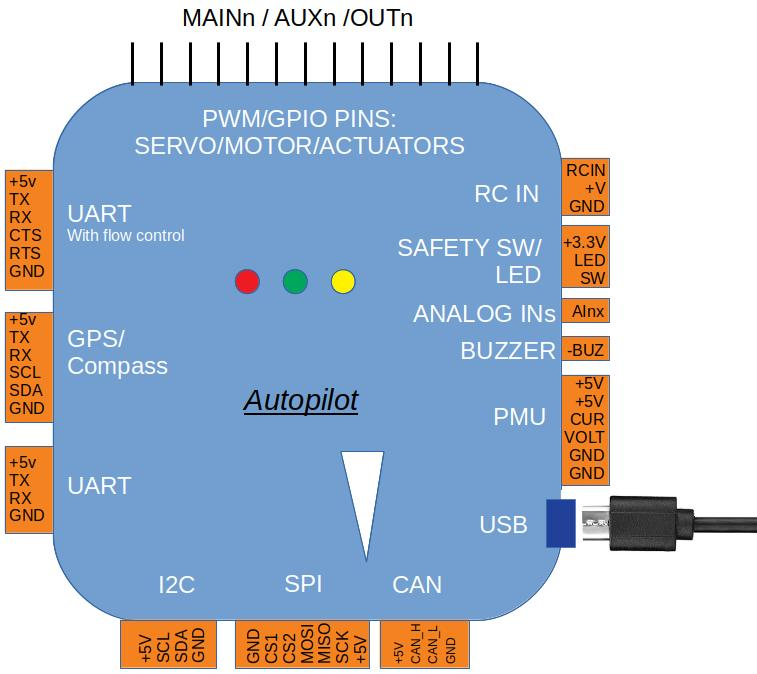

Autopilot Inputs and Outputs¶
All ArduPilot Autopilots provide inputs and outputs for connecting:
Control Inputs (Mandatory for vehicle operation):
Radio Control Receivers
MAVLink Data Streams, ie ground control stations or companion computers
Sensor Inputs:
GPS (mandatory item)
Compass (mandatory except for certain Plane uses)
Airspeed
Rangefinders
Redundant barometers, IMUs, etc.
Power Management Unit Inputs (Mandatory to supply power to autopilot)
Analog Inputs:
Received Signal Strength Input (RSSI)
Analog Airspeed Sensors
Flight Control Outputs (Mandatory for vehicle operation):
ESCs for motors
Servos for control surfaces/mechanics
Telemetry Outputs
Actuators and General Purpose I/O:

Relays
LEDs
Safety Switch
Buzzers
I/O Port Types¶
Note
See the individual autopilot’s description page for what specific ports are provided and exact pinouts of each port.
USB¶
USB is provided as the primary port for configuration of the autopilot. It always appears as the first Serial port (0) to the autopilot. See Serial Port Configuration
UART¶
Usually several UART ports are provided. These provide connections to Telemetry radios, GPS, Rangefinders, and even SBUS servos. In addition,as of firmware versions 4.0, serial RC receiver inputs can be connected to any UART. See Serial Port Configuration Signals +++++++
TX: Data Output, connects to peripherals RX signal
RX: Data Input, connect to peripheral TX signal
usually +5V and GND are provided in the connector, or close by if a board style autopilot
Sometimes flow control signals are optionally provided in the connector. Some Telemetry radios utilize these signals:
CTS: Clear to Send Output to peripheral’s labeled CTS input
RTS: Request to Send Input from peripheral’s labeled RTS output
I2C¶
I2C is used to connect certain sensors or peripherals. Most notably compasses (which are mandatory in many vehicles) and digital airspeed sensors.
Signals¶
SCL: Clock Output, connects to peripherals SCL pin
SDA: Bi-directional Data, connects to peripherals SDA pin
While I2C uses 3.3V signaling, often +5V is supplied in the connector along with the signals, since many I2C devices actually use this as main power. If not enough ports are provided, I2C expansion boards can allow more than one device to be connected.
Note
Some board level autopilots require external 2K ohm pullups on the signal lines to 3.3V since they are not provided on the board, while some I2C peripherals provide the pull-ups. If the device does not operate properly, one should first be sure that the pull-ups are provided somewhere.
GPS¶
GPS is usually attached to one of the UART ports, but some autopilots provide a connector dedicated to GPS and/or GPS/Compass which includes the I2C signals.
Signals¶
TX: Data Output, connected to the GPS RX input
RX: Data Input, connected to the GPS TX output
Note
Note the swapping of signals between autopilot and peripheral.
usually +5V and GND are provided in the connector. If its a GPS/Compass port, then the I2C signals will also be provided and attached to the same named signals on the compass sub-module of a GPS/Compass module.
PMU¶
Most autopilots provide the means to attach to a Power Management Unit (PMU) of some kind. These units provide any, or all, of the following:
A regulated +5V supply for the autopilot from the flight battery
Monitoring of current from the flight battery
Monitoring of voltage from the flight battery
Signals¶
+5V: Regulated supply to autopilot
CUR: Current Monitor output. Usually a 0-3.3v analog voltage represents current draw level
VLT: Voltage Monitor output. Usually a 0-3.3V analog voltage representing battery voltage
GND: Ground
Some “smart” battery/power monitors replace the CUR and VLT pins with I2C signals to provide digital information on battery status.
Many board style autopilots fully integrate the PMU as part of the board with internal connections to the processor.
In addition, many autopilots offer multiple PMU connections since ArduPilot firmware versions 4.0 and later support up to 10 PMUs/Battery Monitors.
RCIN¶
Input from the radio control receiver is input on this pin. Most serial RC protocols (PPM, SBUS, DSM, etc.) are supported by ArduPilot and auto-detected. In addition, some autopilots provide dedicated connectors for DSM protocol satellite receivers which provide power to the receiver in addition to the input signal.
As of firmware versions 4.0 and later, ArduPilot also allows an RC receiver to be attached to any UART port.
MAIN/AUX/OUT¶
The primary outputs for controlling motors (via ESCs) and servos are provided by these pins/connectors. They are labeled either as MAIN/AUX outputs or just as OUTPUTs. These outputs provide the PWM or Dshot signals for motor ESC or servo control of flight surfaces. They can also be sometimes used as general purpose I/O pins for controlling relays, parachutes, grippers, etc.
Those controllers with MAIN/AUX output labels usually indicate that a IOMCU co-processor is being employed. These provide outputs intended for use as the motor/servo outputs and provide a redundant means of control via RC if the main autopilot fails. The MAIN outputs come from this co-processor, while the AUX designated outputs are controlled directly from the autopilot. Most board level autopilots do not use an IOMCU and have outputs only labeled OUTPUTx or Mx.
This distinction is important, since AUX outputs(and OUTPUTs from autopilots without an IOMCU) can be used as GPIOs as well as PWM or Dshot. While MAIN outputs can only be used for PWM, except for use as a RELAY GPIOs. See GPIOs
Note
A few autopilots that do NOT use an IOMCU label their outputs as MAIN, so actually do have the capability of use as GPIOs and/or Dshot ESC control on these outputs. CUAV V5 Nano and Holybro Pixhawk 4 Mini are examples.
Often these outputs are provided on 3 pin connector strips supplying or distributing servo power and ground, in addition to the individual output signals. This power is usually provided externally, such as by the ESC or a BEC, although some autopilots provide this power from internal regulators.
CAN¶
CAN bus is provided on many autopilots for use with DroneCAN peripherals. ESCs, GPS/Compass, Rangefinders, and many other peripherals and sensors are being added to the list of available DroneCAN devices everyday. CAN provides a robust method of communicating with peripherals with data integrity, even with long leads.
Signals¶
CAN_H: CAN high side signal, connects to peripherals CAN_H pin
CAN_L: CAN low side signal, connects to peripherals CAN_L pin
Power and ground are usually also provide on a standard 4 pin JST-GH connector.
SPI¶
Most autopilots have processors with multiple SPI ports. While some ports are used for onboard peripherals, often one or more are provided externally for the addition of sensor chips such as barometers or IMUs, for redundancy.
Signals¶
CSx: One or more chip selects for enabling the SPI peripheral
MOSI: Master Out/Slave In Data, connects to same signal on SPI peripheral
MISO: Master In/Slave Out Data, connects to same signal on SPI peripheral
SCK: Clock Signal
Note
SPI signal names can be labeled in many different ways. See the SPI Wikipedia entry for more information.
SAFETY SW/LED¶
Many autopilots provide dedicated GPIOs on a connector for adding the optional safety switch and notification leds that ArduPilot support. Usually these are offered on autopilots that utilize an IOMCU co-processor.
Signals¶
+3.3V : Supply to the LED and Switch
LED: Drives the ground side of the notification LED
SW: Senses if +3.3V is present to indicate switch closure
BUZZER¶
A -BUZZ output is sometimes provided for a passive or active buzzer for system notification sounds, and provides a switched ground connection to the buzzer. See Buzzer
ANALOG INPUTS¶
Often analog voltage measurement pins are provided. These are used for current and/or voltage sensing from a power monitor (if a dedicated connector has not been provided), other system voltage monitor points, or for analog RSSI input.